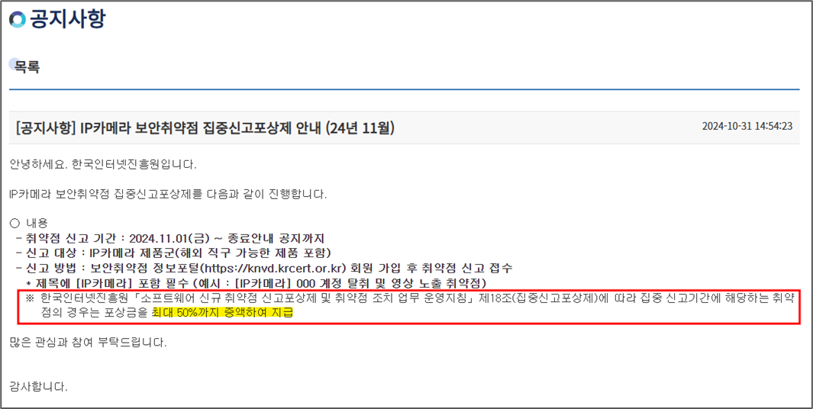

[Research] One day.. I got an IPCAM (en)
Hello, this is hunjison. While studying hacking, I always felt something was missing—namely, the fact that I had never discovered a CVE.
Then one day… I heard an interesting story from OUYA77.
Dun… Dun…!! It turns out that KISA was running a 1.5x payout event for IP CAM vulnerabilities.
After seeing this, every IP CAM started looking like money to me. Of course, I also thought this would be a great opportunity to earn a CVE.

IP CAM Target Search
Together with OUYA77, we immediately began narrowing down a list of IP CAM products. Home IP CAMs ranged from 20,000 to 100,000 KRW, while enterprise-grade IP CAMs varied from 200,000 KRW to over a million.
Since we were not rich but wanted to make money, we decided to buy multiple home IP CAMs!
We specifically selected products with numerous attack vectors, especially focusing on external interfaces. Here are the interfaces we identified:
- Wi-Fi (AP)
- App (iOS/Android → IP CAM)
- Windows program
- External cloud storage
- Ethernet
- SD Card
- USB
Most modern IP CAMs include most of these interfaces, making them somewhat similar in structure. Additionally, we considered whether firmware could be obtained online.
In the end, we purchased four small and adorable IP CAMs. Among them, I will introduce our analysis of two devices.
Target A
#1 - Initial Exploration
Target A had two user interfaces: an app (iOS/Android) and a Windows EXE. Below are the initial findings from our analysis:
- App:
- Requires account registration/login and appears to transmit data from the app to a server.
- Device registration involves scanning a QR code from the app, which contains Wi-Fi credentials.
- Once registered, the user can watch video feeds.
- Windows Program:
- Requires account registration/login and tran smits data to a server.
- After logging in, it automatically scans for devices on the LAN, registering them based on serial numbers.
- If not logged in, it can still scan the LAN for devices and watch video feeds.
- Firmware Download:
- Found a method via publicly available blog posts.
- Could be downloaded from the official website using a
/device/{device-model}/{device-model}URL structure. - Using
binwalk, we confirmed that the firmware used asquashfsfile system and extracted the files.
#2 - Windows EXE Analysis
We aimed to analyze the Windows program to answer the following questions:
- What data is exchanged with the server when the login button is pressed?
- What authentication protocol is used when the video playback button is pressed?
We first attempted network analysis using Wireshark.
- Due to TLS encryption, the packets were unreadable.
- Just as browsers allow TLS decryption via
SSLKEYLOGFILE, we attempted dynamic debugging of the program’s TLS logic to extract key files. - However, reversing the TLS structure turned out to be difficult, so we sought an alternative approach.
Fortunately, I had prior experience with the Frida framework, so we used Frida to hook SSL-related encryption and decryption functions.
- Identified SSL-related functions imported by the Windows EXE.
- Extracted argument values and return buffers based on static analysis. The right-hand image shows an HTTP 200 response!

Using the Frida hooking method, we gained some insights into how the Windows EXE operates.
#2.1 - Watching Video After User Login (WAN Network)
When the Windows program and IP CAM are on different networks (WAN), they communicate through a server, as shown below:
- Once TLS decryption is disabled, the server receives the user’s password.
- If authentication is successful, the server sends video data.

However, the TLS 1.2 encrypted communication between the IP CAM and server was not decryptable. Only certain cipher suites using RSA are known to have vulnerabilities, but the target IP CAM used TLS_ECDHE_RSA_WITH_AES_128_GCM_SHA256, making MITM attacks impossible.
[See Also] Packet Sniffing with a Wi-Fi Dongle
To capture packets exchanged between the IP CAM and server, we used a Wi-Fi dongle. Typically, dongles enable Wi-Fi on devices without built-in Wi-Fi, but we repurposed one to rebroadcast Ethernet as Wi-Fi.
- As shown below, the dongle functions like a router.
- By selecting the dongle’s network interface in Wireshark, we captured all packets sent to the IP CAM.

#2.2 - Watching Video After User Login (LAN Network)
An interesting logic was discovered in the LAN network. When I confirmed that the Windows EXE and IP CAM were encrypting data using a LAN encryption key, I naturally assumed it was a fixed key. That was my mistake—I underestimated Target A.
As shown in the diagram below, when a user logs in, the server issues a JWT token, which is then used to deliver the LAN encryption key. It is assumed that a similar mechanism is used between the server and the IP CAM.

#2.3 - Watching Video Without User Login (LAN Network)
Target A had a feature that allowed scanning and watching videos on the LAN without logging in. However, a user password was required to access the video stream.
- The Windows EXE cached successful passwords so that users wouldn’t have to re-enter them repeatedly. I mistakenly thought I had found a vulnerability, but right before writing the report, I realized I had misunderstood the caching mechanism.

#2.4 - Watching Video Without User Login (RTSP Protocol)
Target A also supported the RTSP protocol. RTSP (Real-Time Streaming Protocol) is used to stream multimedia data such as audio and video over a network. I was able to identify Target A’s RTSP URL through an online blog post.
- In older versions of Target A, a six-digit device code was used as the RTSP password. However, the latest version patched this by requiring users to set a password during device registration.

#3 - API Server
While hooking the Windows EXE with Frida, I discovered the API server’s address. This server provided the same functionality as the Windows program but was only accessible via Internet Explorer. It was an extremely outdated website.
- The server supported user registration, device registration, and password changes, just like the Windows program.
- I considered testing various possibilities, but I stopped after realizing it was outside the scope of the bug bounty program.
#4 - Firmware Analysis
As mentioned earlier, we acquired the firmware early in our research. We focused on the following areas but did not find any vulnerabilities:
- Command Injection: We examined processes that accepted system commands as parameters but found no exploitable weaknesses.
- BOF / DoS Attacks: We checked whether input length validation was properly implemented in user request handling but found nothing exploitable.
#5 - Result
Our analysis of Target A primarily focused on the Windows EXE, testing various scenarios. Unfortunately, we did not discover any vulnerabilities. One thing that stood out was that this product had likely been analyzed by many hackers before.
- The four scenarios analyzed in Section #2 applied secure encryption methods. I doubt it was designed this way from the beginning.
- Input length validation for buffer overflow (BOF) attacks was abnormally strict.

Target B
#1 - Initial exploration
Target B’s user interface includes an App (iOS/Android) and a Windows EXE. While analyzing the network traffic of the Windows EXE, we identified a Web Interface on the IP CAM’s IP address.
- App
- Initial setup instructions appeared weak in security.
- During device registration, the mobile device connects to the IP CAM’s Wi-Fi, and the mobile device’s Wi-Fi credentials are transmitted to complete the initial registration.
- After registration, users can watch live video streams.
- Additional features include recording, cloud uploads, camera pan/tilt/zoom, and buzzer activation.
- Windows EXE
- Can discover and register devices on the local network.
- Offers limited functionality.
- Web Interface
- A CGI-based website accessible via the IP CAM’s IP address. Authentication via user password is required. The poor UI suggests many potential vulnerabilities!
- Provides most of the features available in the App.
- Includes system configuration backup/load and firmware update functionality.
#2 - Web Interface
#2.1 - System configuration backup/load
The Web Interface allows users to back up (IP CAM → PC download) and load (PC → IP CAM) system configuration files. The binary file structure is as follows:
- Header (0x200)
- Contains an MD5 hash.
- Body
- TAR structure.
Identifying the TAR structure in the BODY field allowed us to extract file paths and original data. If we modified the structure to insert our own data at /etc/shadow, overwriting the system file should theoretically be possible.

However, the issue was the MD5 hash. While the length matched that of an MD5 hash, the computed value did not match. Later, we found a 2019 post detailing how someone successfully modified the MD5 value to change the root password of the same IP CAM model.
This clearly suggests that the vulnerability was reported and patched. 😂 As we later discovered during firmware extraction, the MD5 hash calculation method appears to have been repeatedly updated by security researchers.
#2.2 - Firmware update
We downloaded the firmware from the manufacturer’s website. Although it appeared to be in a standard ZIP format, it could not be extracted properly. Upon inspection, we found some customized modifications to the ZIP structure.
By following the ZIP format and adjusting our script accordingly, we managed to modify parts of the binary and successfully extract the firmware (although some errors prevented full extraction).
](image%209.png)
https://blog.forensicresearch.kr/3
During our analysis, we also discovered a way to access an archive of firmware versions from the manufacturer’s website. We analyzed the firmware using the following methods:
- ZIP structure analysis
- Adjusted scripts to match the ZIP format and extract firmware.
- Main binary reverse engineering
- Reversed the logic used to generate system config files (which have the same structure as the firmware) to track changes over time.
Through this analysis, we identified how firmware updates had evolved. The changes suggest continuous involvement from security researchers… quite impressive!
- ZIP file structure modifications
- Initially, file signatures were simply altered to obscure their format.
- Later, parts of the file were partially encrypted.
- In the latest versions, the entire file appears to be encrypted.
- MD5 hash generation logic
- Initially, it was
MD5(BODY). - Later, it changed to
MD5(BODY + "secret string"). - The current method remains unknown.
- Initially, it was
- Firmware file upload location
- From 2017 to 2021, firmware was uploaded to the manufacturer’s website.
- Since then, firmware updates have been distributed via a backend connected to the App.
#3 - App
Since we did not have a rooted Android phone, we only analyzed the App at the network level. (Okay, fine, we were just too lazy to go deeper. 😆) However, since we had an iPhone, we captured network packets as follows:
- A quick Google search revealed that connecting a MacBook to an iPhone allows for iPhone packet capture.
](image%2010.png)
https://lxxyeon.tistory.com/157
Analyzing the captured packets between the iPhone and the IP CAM, we observed the following communication process:
- When the IP CAM is powered on, it periodically communicates with the server, sending its IP address and a port number that changes every minute.
- When the user launches the App, it sends a communication request to the server. The server then relays the request to the IP CAM using the stored IP/port information, including the user’s IP/port data.
- The IP CAM receives this information and sends a connection request to the user.

Examining publicly available attack cases against Target B, we found that attackers typically followed these steps:
- Performed a chip-off extraction of the flash memory and dumped the firmware.
- Analyzed the binary and identified a buffer overflow (BOF) vulnerability.
- Exploited the BOF to achieve remote code execution (RCE) and gain a shell.

If we were to start analyzing the IP CAM from scratch, we would follow their approach and extract the firmware directly from the flash memory. Through this project, we realized the absolute importance of obtaining firmware and setting up a dynamic debugging environment.
- Seriously, this is the most important part.
#4 - Windows EXE
Although the logic of the Windows EXE was simple, what stood out was that the App and the Windows EXE used completely different protocols. Since the IP CAM supports multiple protocols, this suggests that many vulnerabilities could potentially be found if explored further.

Conclusion
Over approximately three months (Nov 2024 – Jan 2025), I analyzed four IP CAMs, including the two described in this post. As this was my first experience analyzing IoT devices, I encountered many challenges. In particular, I was not very familiar with Windows EXE analysis and network protocol analysis.
Despite this, I learned several key lessons from this project:
- Some targets are more vulnerable than others. Devices that have been extensively analyzed by hackers tend to have a much higher security level.
- Many of the most basic vulnerabilities in IP CAMs seem to have been patched.
- IoT device analysis requires a broad range of foundational knowledge, including Windows EXE static and dynamic analysis, network protocol analysis, socket programming, web hacking, system hacking, and even hardware-based approaches.
- Extracting firmware and setting up a dynamic debugging environment should always be the top priority.

Thank you for reading!

본 글은 CC BY-SA 4.0 라이선스로 배포됩니다. 공유 또는 변경 시 반드시 출처를 남겨주시기 바랍니다.